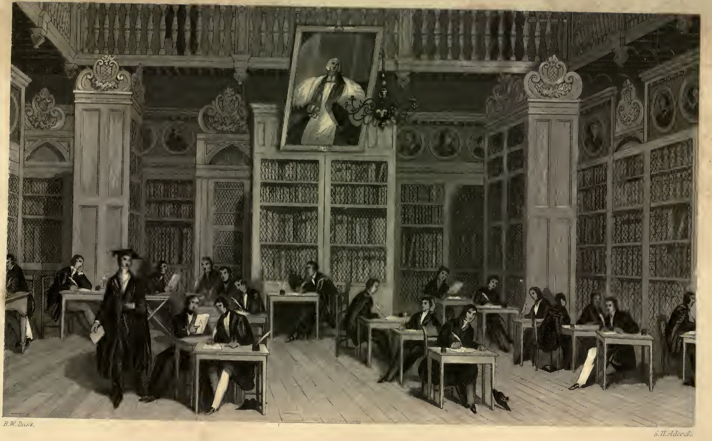
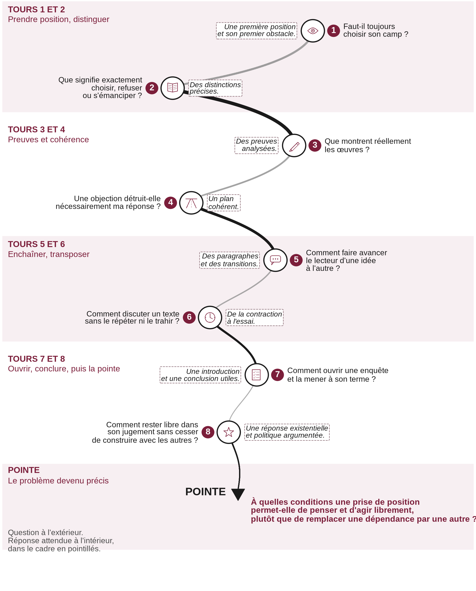

Lettres · Première · Lycée général et technologique
Dissertation et essai : les épreuves du bac en marche
Huit séances pour apprendre à prendre position, éprouver une réponse, et la déplacer. Dissertation pour la voie générale, contraction et essai pour la voie technologique.
Épreuve anticipée de français, écrit de 4 heures. La séquence prépare la dissertation, pour la voie générale, et la contraction suivie de l’essai, pour la voie technologique. Elle s’appuie notamment sur Rimbaud, Cahier de Douai, et sur La Boétie, Discours de la servitude volontaire, au programme 2026-2027.

Présentation
Huit séances de 55 minutes, prévues sur 52, mènent à l’épreuve écrite de 4 heures. La dissertation et l’essai y sont travaillés comme des démarches d’enquête : chaque argument doit modifier, préciser ou approfondir la réponse.
Trois mouvements d’un raisonnement :
- Ancrer : établir une première réponse solide.
- Éprouver : examiner les limites de cette réponse.
- Déplacer : découvrir la distinction ou la perspective qui permet d’aller plus loin.
Pour la voie générale, la dissertation part d’une question littéraire sur une œuvre et son parcours. Pour la voie technologique, la contraction d’un texte d’idées est suivie d’un essai. Les copies modèles sont des exemples pour inspirer, non des textes à apprendre par cœur.
La spirale de Gorse
La spirale de Gorse conduit du vaste au décisif. Les premières boucles sont larges. À chaque tour, le tracé se resserre. Il s’achève par une pointe, non par un centre. Huit questions mènent ainsi à un problème que l’on peut enfin traiter.

À la pointe. À quelles conditions une prise de position permet-elle de penser et d’agir librement, plutôt que de remplacer une dépendance par une autre ?
Téléchargements
Quatre documents, chacun en PDF, Word et LibreOffice. Vous pouvez utiliser et adapter ces documents en citant leur autrice, sans usage commercial, et en partageant vos versions dans les mêmes conditions. CC BY-NC-SA 4.0.
-
Séquence (31 pages)
PDF Word (.docx) LibreOffice (.odt) -
Fiche professeur (3 pages)
PDF Word (.docx) LibreOffice (.odt) -
Fiche de correction (9 pages)
PDF Word (.docx) LibreOffice (.odt) -
Version dys (7 pages)
PDF Word (.docx) LibreOffice (.odt)
Pour l’oral, voir aussi L’oral du bac de français : présenter une œuvre et dialoguer.
Madame Carole Paoli Pompougnac
George Henry Adcock, d’après Robert William Buss, « Examination of the Students of the University of Durham », octobre 1842, bibliothèque Cosin, Durham, domaine public. Schéma de la spirale de Gorse : illustration originale, conçue par Madame Carole Paoli Pompougnac.